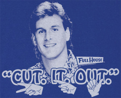

Three word forms are poems that tell a story with three words per line, e.g.|
MORNINGS sleep, alarm, awake alarm, awake, shower awake, shower, clothes shower, clothes, shoes clothes, shoes, dog shoes, dog, run dog, run, breakfast run, breakfast, sunrise breakfast, sunrise, car sunrise, car, work. ---Liam Neeson (Grade 8) |
THE GAME ball, snap, run snap, run, tackle run, tackle, sack tackle, sack, pass sack, pass, catch pass, catch, 1st down catch, 1st down, touchdown. ---Robert Newhart (Grade 7) |